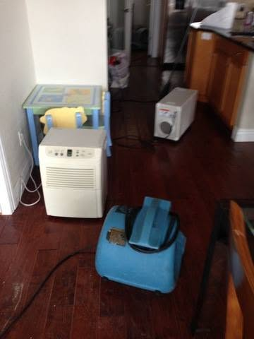

Mold or Mildew in a Florida Home: How to Tell Them Apart
Mildew wipes off a surface. Mold has roots in the material. Here is how Largo homeowners tell the difference and what each one needs.

A musty smell in a Largo home with nothing visible on the walls almost always means growth somewhere you cannot see. Smell travels through a building long before staining appears on a surface, which is why the nose usually finds the problem first.
The useful question is not whether something is growing. It is where the moisture feeding it is coming from, because removing the smell without correcting the source never lasts.
Water coming in right now? Call and we will confirm an arrival window for your address.
Call (833) 289-9993The odour comes from compounds released by active microbial growth as it breaks material down. It means something is growing and has enough moisture to keep going.
Because those compounds are airborne, they move through wall cavities, floor assemblies and the air handling system. The room where you smell it is often not the room where the growth is.
| Location | What to look for |
|---|---|
| Air handler closet | Rust in the pan, standing water, damp wall at the base, blocked condensate line |
| Wall base behind furniture | Soft drywall, lifting paint, a dark line at the baseboard |
| Under sink cabinets | Staining on the deck, swollen particle board, a soft toe kick |
| Under flooring near a past leak | Cupped boards, lifting plank edges, loose tile |
| Attic under roof penetrations | Dark staining on decking, compressed insulation |
| Closets on exterior walls | Still air plus a cool surface makes condensation likely |
In coastal Pinellas homes the air handler closet causes more hidden growth than plumbing does. Condensate pans rust through, drain lines clog with biological growth, and the overflow soaks the closet wall and whatever is on the other side.
Flush the condensate line at the cleanout each spring. If the pan shows rust or standing water, that is the source before you look anywhere else.
Not sure whether this is a job for a crew? Describe what you are seeing and we will tell you plainly.
Call (833) 289-9993Moisture is what growth needs, so finding the moisture usually finds the growth. Pinless meters read through surfaces without damage, and thermal imaging shows temperature differences where evaporation is happening behind a material.
Neither tool sees mold. They see the conditions that support it, which is enough to locate the area. Confirming growth behind drywall still takes a small inspection opening.
Masking the smell with an air freshener or an ozone generator does not address the moisture, and ozone generators can damage materials and irritate the lungs. Spraying bleach on porous material adds water without reaching the growth.
Correct the moisture source, then remove affected porous material. That order is what makes the smell stay gone.
For the full scope of extraction, drying and repair work across Pinellas County, see water damage restoration in Largo, FL.
Get it handled
Call if any of these apply. A two minute conversation is usually enough to tell you whether the work needs a crew.
Availability is confirmed when you call, with an arrival window for your address.
Call (833) 289-9993Related guides
Mildew wipes off a surface. Mold has roots in the material. Here is how Largo homeowners tell the difference and what each one needs.
Mold growth timeline for a wet Largo, FL home. What happens each day, why Florida humidity speeds it up, and when drying alone stops working.
Water damage in a Largo slab home moves sideways, not down. Here is what happens hour by hour, and which first-day calls decide what gets saved.
Burst pipe first steps for a Largo, FL home. Where to shut the water off, what to photograph, and what to move before anyone else arrives.
Services
Containment, HEPA filtration, removal and post remediation verification.
Moisture mapping, thermal imaging and sampling with a written report.
Questions
It usually means active growth somewhere hidden, such as inside a wall cavity, under flooring or in the air handler. Smell travels before staining appears.
The air handler closet is the most common source, followed by wall bases after a slab or supply leak and the floor assembly after an earlier loss.
Yes. Chronic humidity, a condensate drip or condensation on cool surfaces will support growth with no standing water ever appearing.
It may reduce it while running, but it does nothing about the moisture or the growth. The smell returns as soon as the unit is off.
No. They do not address the moisture source, and ozone at levels high enough to affect odour can damage materials and irritate the lungs.
Moisture meters and thermal imaging locate the conditions growth needs, which usually finds the area. Confirming growth behind drywall takes a small opening.
Not by itself. It means something is wet and active. People with asthma, allergies or immune conditions are most likely to notice effects.
Because the system is moving air across or past the growth, often inside the air handler or the duct run, and distributing it through the house.
Correct the moisture source first, then remove the affected porous material. Treating odour without fixing moisture is always temporary.
Testing helps when the source is unclear or a written protocol is needed. With a visible source and a known leak, the work can usually be scoped directly.
Call and describe what you are seeing. We confirm an arrival window for your address.